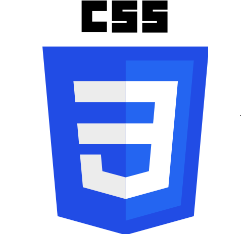
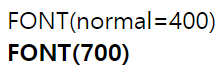

#2 글꼴 관련 스타일
[목차]
1. font-family - 글꼴 지정
2. font-size - 글자 크기 지정
3. font-weight - 글자 굵기 지정
* 개인적인 공부내용 정리용으로 작성한 게시글이기에, 잘못된 내용이 있을 수 있습니다.
1. font-family
[기본형] font-family:<글꼴 이름> | [<대체 글꼴 이름1>, <대체 글꼴 이름2>]
font-family 속성은 웹 문서에서 사용할 글꼴을 지정해 줄 때 사용합니다.
웹 문서에서 지정한 글꼴이 사용자의 컴퓨터 시스템에 없을 경우를 대비해서 대체 글꼴 이름을 지정해야 합니다.
예를들어, 다음과 같은 CSS 코드가 있다고 가정해 봅시다.
body { font-family: "나눔 고딕", 바탕, 돋움 }<body>태그는 모든 태그들의 부모 태그 이기에, 웹 문서 전체 에 "나눔 고딕" 글꼴을 설정해 주며, 나눔 고딕이 사용자 컴퓨터에 설치되어 있지 않다면, 바탕체를 , 바탕체조차 없다면 돋움체를 지정합니다.
2. font-size
[기본형] font-size: <절대 크기> | <상대 크기> | <크기> | <백분율>
font-size 속성은 글자 크기를 조절할 때 사용합니다.
<절대 크기> 브라우저에서 지정한 크기
<상대 크기> 부모 요소 기준 상대적 글자 크기
<크기> 브라우저와 상관 없이 직접 지정한 크기
<백분율> 부모 요소의 글자 크기를 기준으로 한 백분율(%) 표시
글자 크기를 조절하는 방식은 「ⓐ키워드 ⓑ단위 ⓒ백분율 」 로 크게 3가지로 분류가 가능합니다.
ⓐ 키워드 방식
미리 약속해 놓은 키워드 중에 하나를 사용합니다. 크기 순으로 나열하면 다음과 같습니다.
xx-small < x-small < medium < large < x-large < xx-large
ⓑ 단위 방식
px(픽셀) , pt(포인트), em 등을 사용하여 나타냅니다. px(픽셀), pt(포인트) 는 절대적 크기이며 em은 상대적 크기입니다.
모바일 환경까지 고려해야 한다면 절대적 크기보단 상대적 크기 단위인 em을 주로 사용합니다.
1em = 16px, 12pt 와 동일합니다.
ⓒ 백분율 방식
부모 요소의 글자 크기를 기준으로 계산하여 지정합니다. 단, 백분율로 지정하기 위해서는 부모 요소의 글꼴 크기가 ⓑ단위 방식을 사용해서 표현되어 있어야 합니다.
아래는 단위, 백분율 방식을 사용한 CSS 예제입니다.
..생략
<style>
body{
font-size: 20px;
}
p{
font-family: "나눔 고딕", 돋움, 바탕;
font-size: 1em;
}
</style>
3. font-weight
[기본형] font-weight: normal | bold | bolder | lighter | 100 | 200 | ... | 900
font-weight 속성은 글자 굵기를 지정할 때 사용합니다.
미리 지정해 둔 예약어 (normal,bold,bolder,lighter) 를 사용하거나 , 숫자값(100~900)을 사용해 세밀하게 조절도 가능합니다.
400 은 normal 700은 bold와 동일하며, 100은 가장 가늘게 900은 가장 굵게 표시됩니다.
다음은 font-weight 속성을 사용한 CSS 예제입니다.
<!DOCTYPE html>
<html lang="ko">
<head>
<meta charset="UTF-8">
<title>font_example</title>
<style>
.font1{
font-weight: normal;
}
.font2{
font-weight: 700;
}
</style>
</head>
<body>
<div class = "font1">FONT(normal=400)</div>
<div class = "font2">FONT(700)</div>
</body>
</html>